Naik Level: Jadi Detektif Program
Pertemuan 2 (TP 10): JIKA bersarang, syarat gabungan, akumulator, pencacah, validasi, dan proyek Rekap Nilai Kelas.
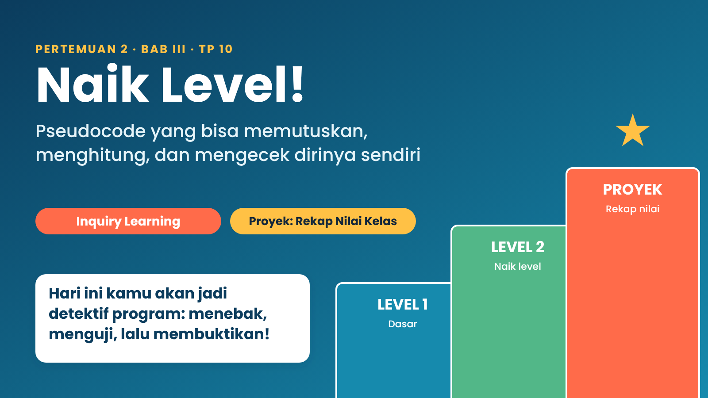
Target belajarmu
- menulis keputusan bertingkat (JIKA bersarang) dengan urutan yang benar,
- memakai syarat gabungan DAN, ATAU, TIDAK,
- membuat program yang menjumlah, menghitung, dan mencari nilai terbesar,
- menjaga program dengan validasi input, dan
- menemukan serta memperbaiki bug dengan tabel jejak.
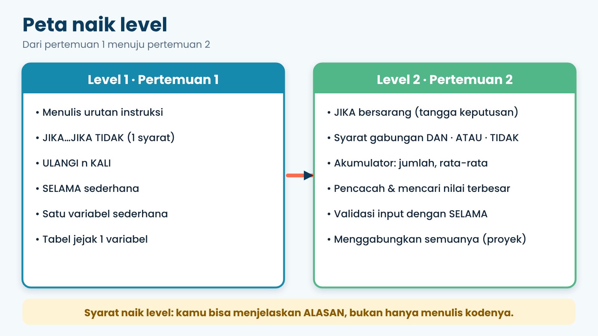
1. Pemanasan: Bekal dari Pertemuan 1
Sebelum naik level, cek dulu bekalmu. Delapan kata kunci ini akan kita pakai terus.
| Kata kunci | Fungsinya | Contoh |
|---|---|---|
MULAI / SELESAI | Awal dan akhir program | MULAI … SELESAI |
BACA | Minta input | BACA nilai |
TULIS / BARIS_BARU | Tampilkan / pindah baris | TULIS "Halo" |
ISI x ← … | Simpan nilai ke variabel | ISI i ← i + 1 |
JIKA … MAKA … JIKA TIDAK | Memilih | JIKA nilai ≥ 75 MAKA |
ULANGI n KALI | Mengulang tepat n kali | ULANGI 3 KALI |
SELAMA … LAKUKAN | Mengulang selama syarat benar | SELAMA i ≤ N LAKUKAN |
2. Misi 1: Program Misterius
Ada sebuah kotak hitam. Kamu hanya melihat angka yang masuk dan hasil yang keluar. Isinya program, tapi kamu belum boleh melihat kodenya.
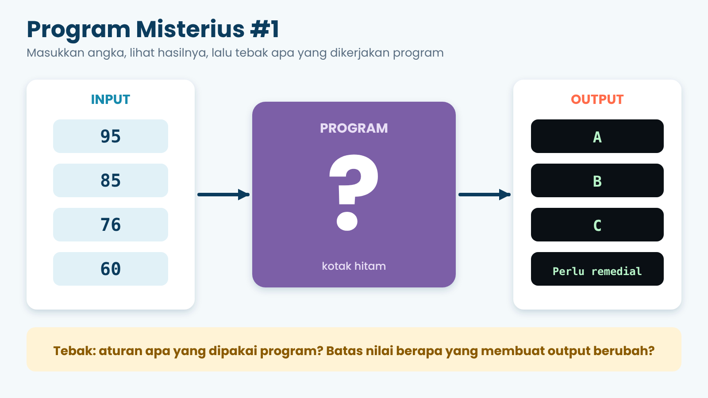
Seorang detektif nggak langsung menuduh. Dia bertanya, menduga, mengumpulkan bukti, baru menyimpulkan. Itulah cara belajar kita hari ini, namanya Inquiry (penyelidikan).
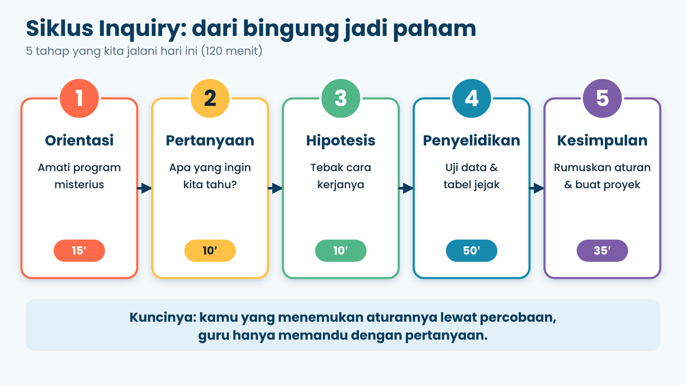
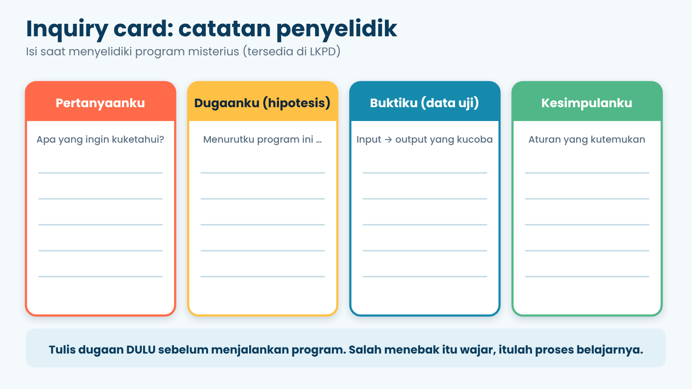
3. Level 2A: Tangga Keputusan
Pada kotak hitam tadi, hasilnya bukan cuma “ya” atau “tidak”, tapi A, B, C, atau Perlu remedial. Artinya ada banyak keputusan yang disusun bertingkat seperti tangga. Cara menulisnya: taruh JIKA di dalam JIKA TIDAK. Itulah JIKA bersarang.
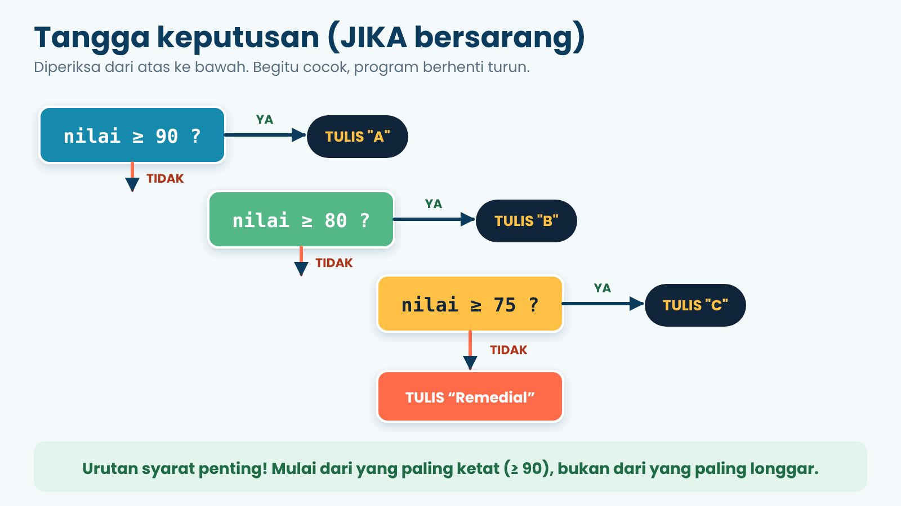
Ayo telusuri nilai 76: ≥ 90? salah → ≥ 80? salah → ≥ 75? benar → tulis “C”. Program berhenti di situ dan nggak lanjut mengecek yang lain.
| Nilai | Jalur | Hasil |
|---|---|---|
| 95 | ≥ 90 benar | A |
| 85 | ≥ 90 salah → ≥ 80 benar | B |
| 75 | ≥ 90, ≥ 80 salah → ≥ 75 benar | C |
| 74 | semua salah | Perlu remedial |
Awas, urutan itu penting!
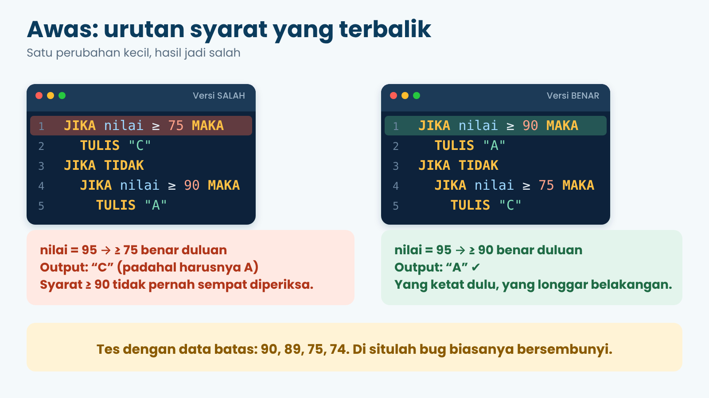
4. Level 2B: Syarat Gabungan
Kadang keputusan butuh dua syarat sekaligus. Misalnya, siswa dinyatakan tuntas kalau nilainya cukup dan kehadirannya cukup. Di pseudocode kita pakai kata DAN, ATAU, dan TIDAK.
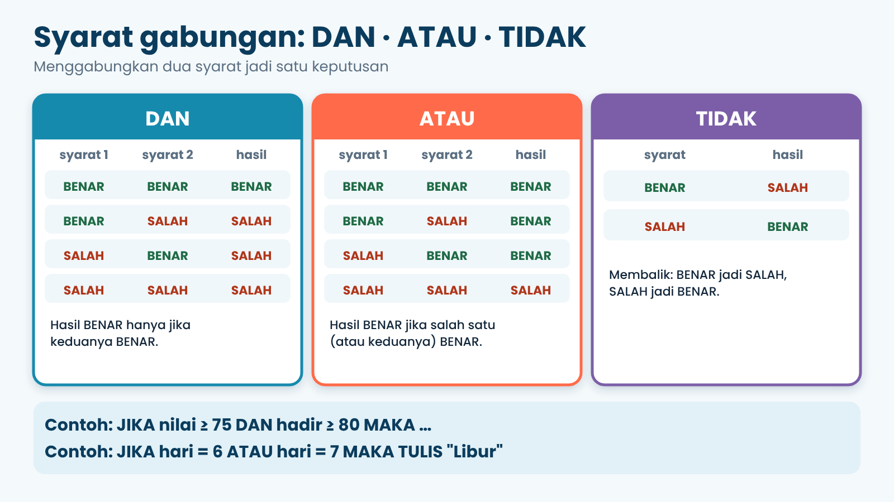
| Nilai | Hadir | Nilai ≥ 75 ? | Hadir ≥ 80 ? | DAN | Hasil |
|---|---|---|---|---|---|
| 80 | 85 | benar | benar | benar | Tuntas |
| 80 | 70 | benar | salah | salah | Belum tuntas |
| 60 | 90 | salah | benar | salah | Belum tuntas |
5. Level 2C: Menghitung seperti Kasir (Akumulator)
Bagaimana program menjumlahkan banyak nilai? Seperti kasir yang menambah total belanja tiap barang masuk. Kita siapkan variabel jumlah yang mulai dari 0, lalu tiap ada nilai baru: jumlah ← jumlah + nilai. Variabel ini disebut akumulator.
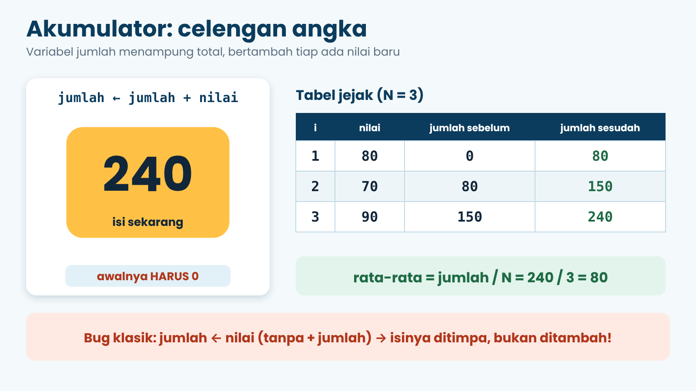
Rata-rata dihitung setelah perulangan selesai: jumlah / N.
6. Level 2D: Mencacah dan Mencari yang Terbesar
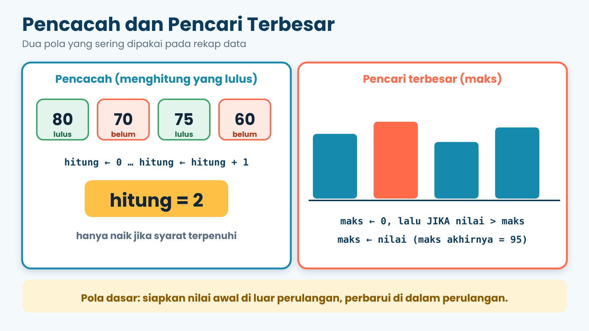
| Pola | Siapkan di awal | Di dalam perulangan |
|---|---|---|
| Pencacah (berapa yang lulus?) | ISI hitung ← 0 | JIKA nilai ≥ 75 MAKA → ISI hitung ← hitung + 1 |
| Nilai terbesar | ISI maks ← 0 | JIKA nilai > maks MAKA → ISI maks ← nilai |
7. Level 2E: Satpam Program (Validasi)
Bagaimana kalau seseorang mengetik nilai 150 atau -5? Program yang baik bertindak seperti satpam: selama nilai nggak masuk akal, minta ulang.
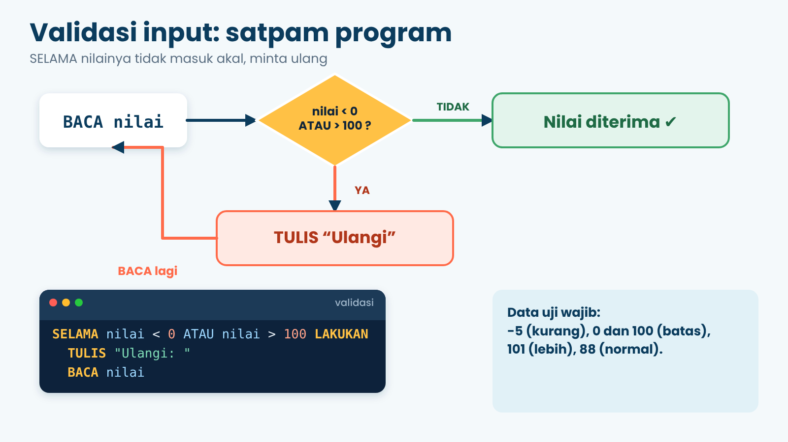
| Input berurutan | Yang terjadi |
|---|---|
| 150, -5, 88 | “Tidak valid” tampil 2 kali, lalu nilai 88 diterima |
| 0 | Langsung diterima (batas bawah) |
| 100 | Langsung diterima (batas atas) |
| 101 | Ditolak, diminta ulang |
8. Misi Bug: Detektif Beraksi
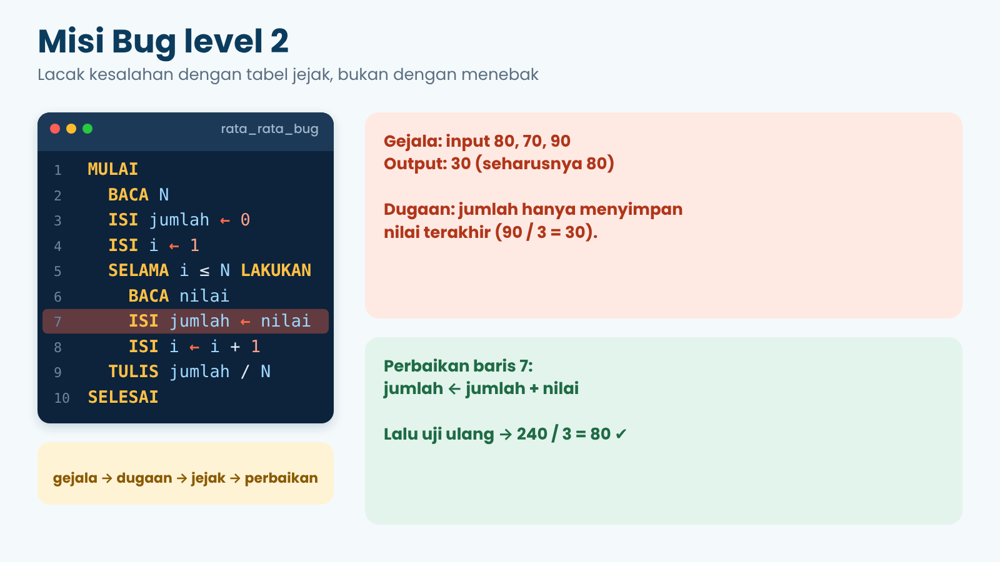
9. Proyek: Rekap Nilai Kelas VIII
Bu Rina, wali kelas, butuh laporan cepat dari nilai ulangan. Programmu harus membaca N nilai, menolak nilai yang tidak masuk akal, lalu menampilkan rata-rata, nilai tertinggi, dan banyak siswa tuntas (≥ 75).
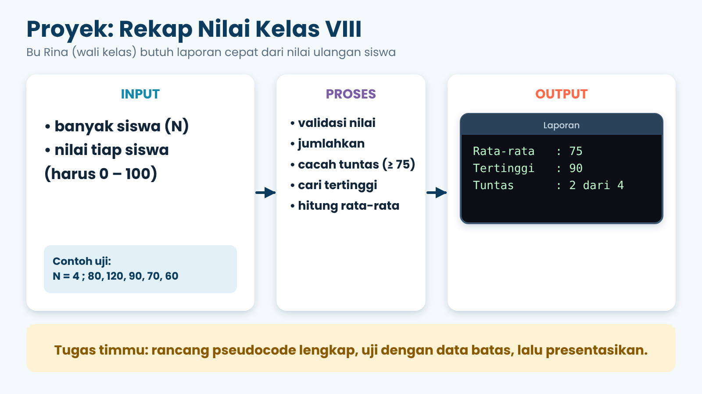
Strategi memecah masalah
- Siapkan semua variabel:
jumlah,tuntas,maks,i. - Buat perulangan
SELAMA i ≤ N. - Di dalam perulangan: baca nilai → validasi → tambahkan ke jumlah → cek tuntas → cek terbesar → naikkan i.
- Setelah perulangan: tampilkan rata-rata, tertinggi, dan tuntas.
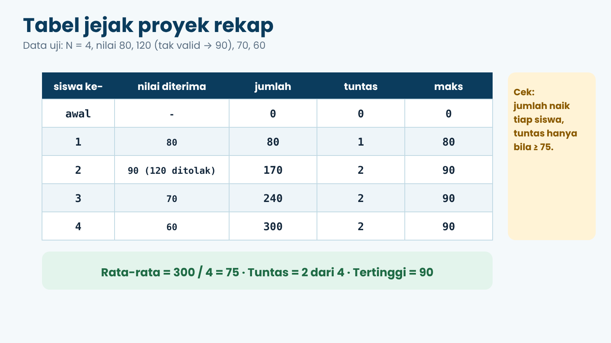
Simulator Pseudocode
Tulis pseudocode-mu di kotak kiri, isi input di kanan (satu nilai per baris, sesuai urutan BACA), lalu tekan Jalankan. Pakai indentasi 2 spasi, 8 kosakata baku, dan syarat DAN / ATAU / TIDAK. Pilih contoh di bawah, lalu coba ubah-ubah!
Tekan “Jalankan”…
Kuis Cek Pemahaman
10 soal pilihan ganda. Pilih jawabanmu, lalu tekan Periksa jawaban.
10. Rangkuman Level 2
| Pola | Ciri utama | Contoh singkat |
|---|---|---|
| JIKA bersarang | JIKA di dalam JIKA TIDAK; syarat ketat dulu | JIKA nilai ≥ 90 MAKA … |
| DAN / ATAU / TIDAK | Menggabungkan syarat | JIKA a ≥ 75 DAN b ≥ 80 MAKA |
| Akumulator | Nilai awal 0, lalu ditambah | ISI jumlah ← jumlah + nilai |
| Pencacah | Naik 1 hanya bila syarat benar | ISI hitung ← hitung + 1 |
| Nilai terbesar / terkecil | Nilai awal tepat, bandingkan | JIKA nilai > maks MAKA … |
| Validasi | SELAMA input tidak masuk akal, baca ulang | SELAMA n < 0 ATAU n > 100 LAKUKAN |
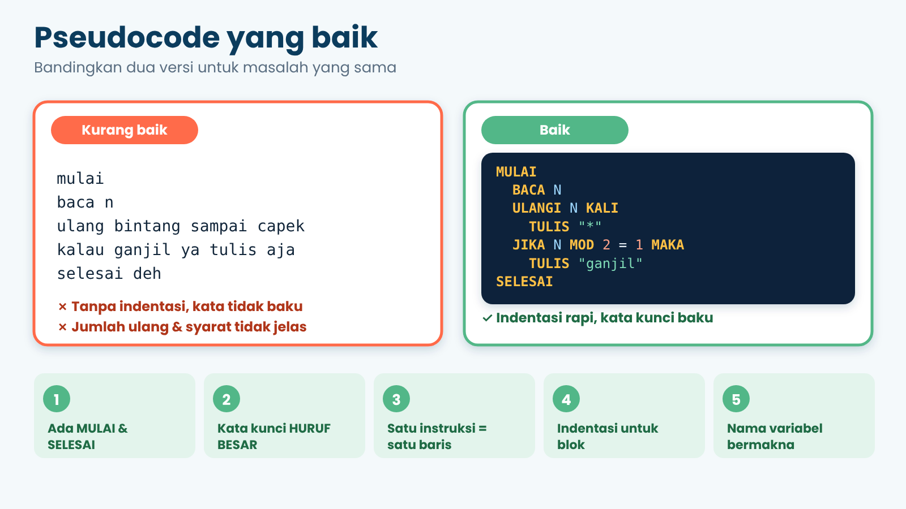
11. Latihan Mandiri
- Ubah program predikat agar ada predikat D untuk nilai 60–74 dan E untuk di bawah 60.
- Program kantin: total > 100.000 diskon 10%, > 50.000 diskon 5%. Tulis pseudocode-nya dan uji dengan 120000, 60000, 30000.
- Buat program yang menghitung berapa siswa remedial (nilai < 75) dari N siswa.
- Tambahkan ke proyek rekap: tampilkan nilai terendah.
- Tantangan: tampilkan “Kelas tuntas semua!” bila semua siswa ≥ 75.